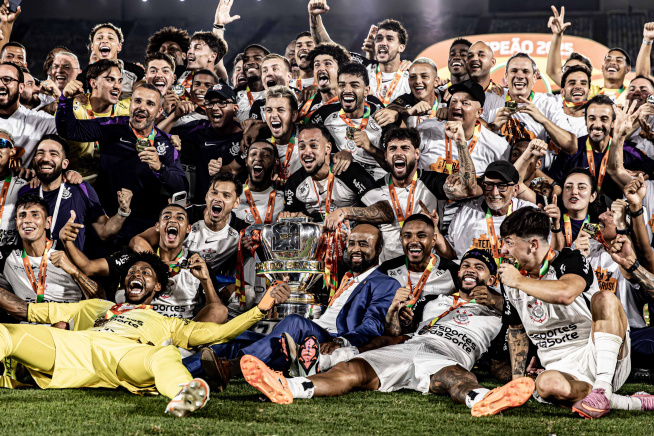
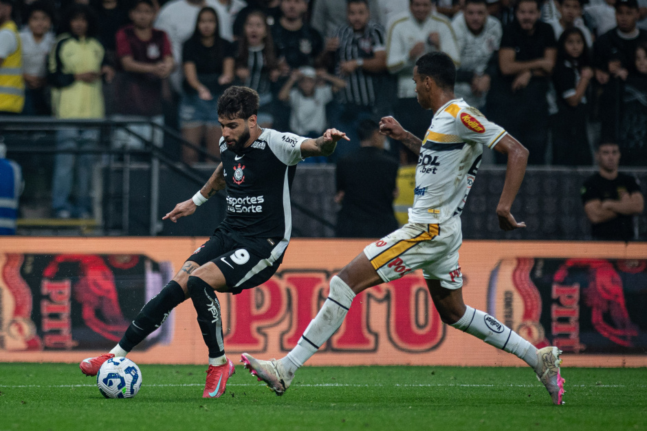
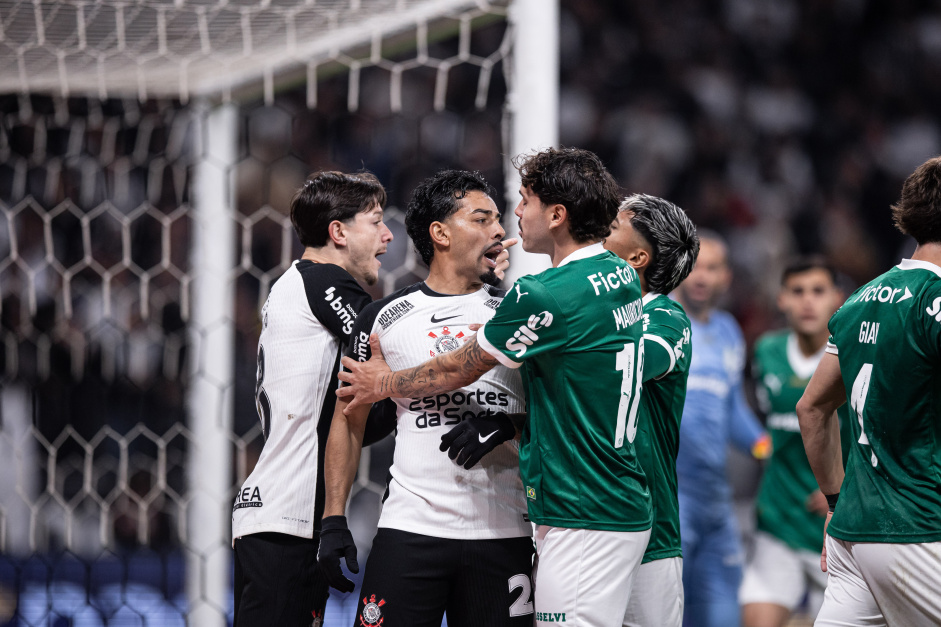
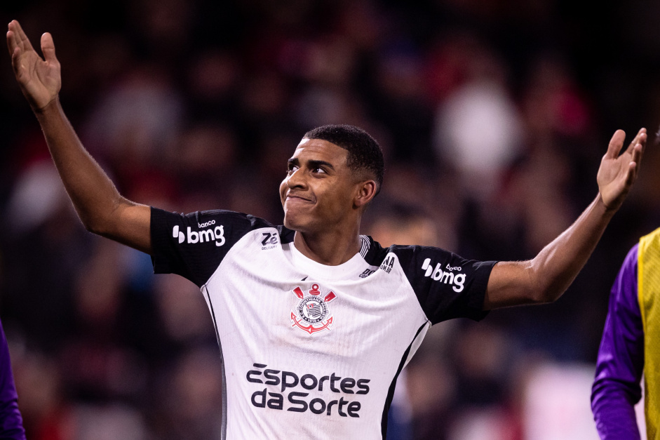
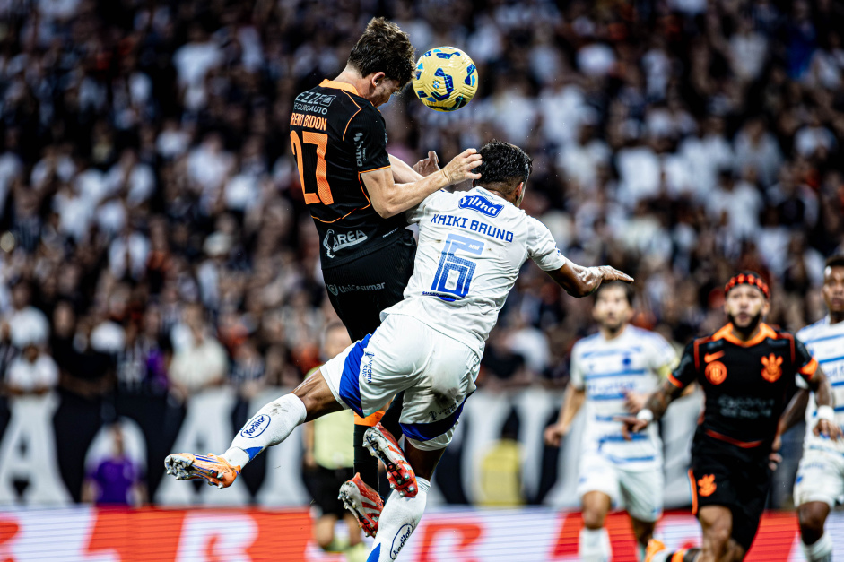
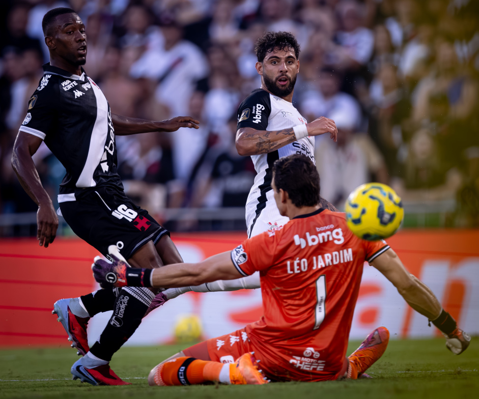
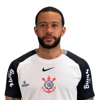
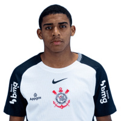
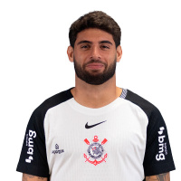
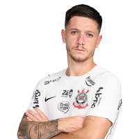

Copa Do Brasil 2025

Corinthians campeão da Copa do Brasil de 2025
O Corinthians conquistou o tetracampeonato da Copa do Brasil no dia 21 de dezembro de 2025,
depois de uma tarde de emoções no Maracanã. A equipe alvinegra já havia encerrado todas as outras competições de disputa no ano.
Este título findou um jejum de oito temporadas em relação às taças nacionais, já que a última havia sido a do Campeonato Brasileiro de 2017. Em relação à própria Copa, o
Timão faturou o torneio em 1995, 2002 e 2009, além deste último em 2025.
Nesta edição, o Corinthians iniciou a competição na terceira fase, válida como 16 avos de final. Ao todo, tiveram 92 equipes participantes em busca da glória. Ao todo,
o clube do Parque São Jorge assegurou um faturamento total de R$ 97,791 milhões na disputa, sendo R$ 77,175 milhões destes os garantidos pela taça. Um feito raro ainda
foi alcançado: comandados por Dorival Júnior, os jogadores alvinegros venceram todos os duelos fora de casa.
Além da quantidade de participantes e do lucro obtido, a grandiosidade do título se passa pela maneira na qual o Timão garantiu o direito de disputa da Copa do Brasil de
2025. Em meados de 2024, dados estatísticos de universidades apontavam 0,04% de chance de a equipe corinthiana entrar na disputa da Copa do Brasil. Isso porque, pela
eliminação precoce no Paulista daquele ano, o time alvinegro teria que se classificar à Libertadores para garantir uma vaga.
Após uma arrancada histórica de nove vitórias consecutivas no Campeonato Brasileiro de 2024, o time zarpou da zona de rebaixamento e se classificou à pré-Libertadores,
ganhando o direito de também disputar a Copa do Brasil em 2025. Apesar da eliminação precoce na copa internacional, a nova temporada
guardaria um momento de redenção no final do ano.
Terceira Fase

Por ter participado da Libertadores, o Corinthians estreou diretamente na terceira fase da competição. O primeiro desafio foi diante do Grêmio Novorizontino, de Novorizonte, no interior de São Paulo.
Coincidentemente, a estreia da equipe no torneio também marcaria a estreia de Dorival Júnior no comando técnico da equipe.
O Timão vinha de uma sequência longa (e estressante) de jogos, com direito a uma goleada por 4 a 0 sofrida contra o Flamengo. O novo técnico decidiu
poupar os titulares no jogo de ida diante do rival interiorano,no dia 30 de abril. No Jorjão, ambas as equipes fizeram um jogo morno, mas os corinthianos
venceram a partida por 1 a 0 com gol de Héctor Hernández.
Na volta, dentro da Neo Química Arena, no dia 21 de maio, a equipe alvinegra tinha a missão de segurar, ao menos, um empate para garantir a classificação. O jogo, novamente,
não apresentou grande espetáculo. Na reta final do segundo tempo, Yuri Alberto cortou a marcação dentro da área e finalizou de esquerda para garantir um novo 1 a 0.
Oitavas de final

Matheus Bidu encarando os jogadores do Palmeiras no Dérbi pela Copa do Brasil
Na sequência, entre julho e agosto, o caminho colocou frente a frente Corinthians e Palmeiras, o maior rival, com a decisão fora de casa. O confronto marcaria o primeiro Dérbi da história da Copa do Brasil.
As equipes estavam em momentos distintos, com o rival brigando por taça na Libertadores e no Campeonato Brasileiro, enquanto o Timão ainda oscilava na temporada.
Mesmo com o favoritismo apontado para o outro lado, o Timão mostrou sua força. A ida, na Neo Química Arena, destinou uma vitória suada por 1 a 0. Na ocasião,
Matheuzinho cruzou dentro da área e Memphis Depay marcou de cabeça para a explosão da Fiel. O adversário pressionou por um empate, mas não conseguiu.
O clássico ascendeu a confiança do Corinthians. A volta estava marcada no Allianz Parque, no dia 30 de julho. Dorival armou uma equipe defensiva, mas Aníbal, do Palmeiras,
foi expulso aos 11 minutos do primeiro tempo após cair na pilha de José Martínez. O Timão aproveitou a brecha para marcar o primeiro gol na cabeça de Gustavo Henrique.
Em um segundo tempo mais tranquilo, Matheus Bidu ainda aproveitaria a sobra dentro da área para fechar a conta por 2 a 0. A equipe desacreditada estava nas quartas de final.
Quartas de final

Corinthians vence o Athletico-PR pela Copa do Brasil
Já nas quartas de final, disputadas entre agosto e setembro, o adversário foi o Athletico Paranaense. Mesmo na Série B, o time do Paraná vinha embalado,
em uma crescente na retomada rumo à elite e confiante após eliminar o São Paulo na fase anterior.
O Timão, por sua vez, enfrentava uma crise de lesões de seus principais jogadores e bastidores conturbados fora do campo. Uma jovem estrela brilhou, porém.
Com desfalques de Yuri Alberto e Memphis, o técnico armou uma dupla da base para o confronto de ida diante do Athletico, no dia 27 de agosto. Kayke e Gui Negão,
que já haviam mostrado serviço no Campeonato Brasileiro, foram os escolhidos. Com muita personalidade, a equipe alvinegra foi melhor que o rival em plena Arena da
Baixada e garantiu um triunfo por 1 a 0 com gol de Gui e nova assistência de Matheuzinho.
Na volta, a estrela voltaria a brilhar. Mais tranquilo no jogo, dentro da Neo Química Arena, no dia 10 de setembro, o Timão abriu o
placar com Rodrigo Garro e assistência de Gui Negão. Depois,a jovem promessa ainda aproveitaria um bate e rebate dentro da área
para fuzilar a rede mais uma vez. O placar de 2 a 0 destinou a classificação do Timão à semifinal.
Semifinal

Breno Bidon na semifinal da Copa do Brasil contra o Cruzeiro
As semifinais aconteceram somente no início de dezembro, após o término do Brasileirão. O Corinthians tinha como adversário, desta vez,
o Cruzeiro, o mesmo time que havia batido o Timão por 3 a 0 na competição de pontos corridos.
Novamente como franco-atiradora, a equipe de Dorival Júnior entrou no Mineirão lotado no dia 10 de dezembro e o calou. Memphis aproveitou cruzamento na área para desviar de
cabeça, depois de pé, e fazer o 1 a 0. A Fiel, presente em Belo Horizonte, deixou a torcida do Cruzeiro sem palavras no estádio mineiro.
A confiança para a volta foi uma armadilha, porém. Dentro da Neo Química Arena, no dia 14, o Cruzeiro abriu 2 a 0 logo no começo da segunda etapa.
O Timão não desistiu do duelo. Depois do apagão inicial, a equipe foi com tudo no ataque e chegou a um tento com Matheus Bidu. O placar agregado mostrou 2 a 2, então, a partida foi aos pênaltis.
De um lado, Hugo Souza, do Corinthians, vivia grande fase, sendo a esperança dos corinthianos na decisão.
Do outro lado, Cássio, do Cruzeiro, enfrentaria a equipe que é ídolo.
Yuri Alberto errou a primeira cobrança, chutando a bola nas mãos do Gigante. A disputa seguiu com todos os batedores, de ambos os times, fazendo os tentos. Memphis,
Rodrigo Garro, Vitinho e Gustavo Henrique converteram pelo lado do Corinthians nesta fase inicial. Na quinta cobrança do Cruzeiro, que selaria a vaga do time mineiro,
Gabriel Barbosa foi surpreendido por Hugo Souza, que deu a chance do Timão seguir vivo às alternadas.
Na primeira das alternadas, o goleiro corinthiano voou para defender nova bola de Wallace. Com muita personalidade, Breno Bidon pegou a bola do match point e colocou o
Corinthians na final.
Final

Yuri Alberto marca o primeiro gol do Corinthians em final contra o Vasco
Por fim, a grande final foi contra o Vasco da Gama. Depois dos percalços, o Corinthians chegava bem para a partida. No entanto,
o time carioca vinha também de uma grande classificação no clássico contra o Fluminense na semifinal.
O primeiro duelo estava marcado na Neo Química Arena. No dia 17 de dezembro, o Timão decepcionou a torcida. Com uma postura pouco agressiva, praticamente, não saíram
finalizações ao gol. Rayan, para o Vasco, e Memphis, para o Corinthians, fizeram tentos impedidos. O placar final ficou em 0 a 0.
A decisão ficou toda para o duelo no Maracanã, no Rio de Janeiro, durante a noite do dia 21, um domingo de calor. Nas arquibancadas,
estavam presentes cerca de cinco mil corinthianos, frente a mais de 60 mil vascaínos. Mas a festa foi da Fiel.
Na primeira etapa, o Timão surpreendeu o adversário e inaugurou o marcador com Yuri Alberto aos 17 minutos de jogo. O atacante recebeu lançamento
de Matheuzinho, dominou dentro da área e deu um toque sutil para vencer o goleiro do Vasco, Léo Jardim.
Mas os mandantes chegaram ao empate com Nuno Moreira em um momento de pressão.
A glória foi registrada no segundo tempo. Breno Bidon, com muita classe, deixou para trás a marcação de Barros e acionou um contra-golpe do Corinthians, novamente aos 17 minutos. Matheuzinho rolou para Yuri,
que viu Memphis entrando na pequena área. O camisa 10 holandês foi para a rede com bola e tudo. O 2 a 1 cravou a taça do Timão.
A campanha em números
A campanha alvinegra terminou com dez jogos disputados, oito vitórias, um empate e apenas uma derrota, além de 12 gols marcados e somente três sofridos. O
principal artilheiro do Corinthians na competição foi Memphis, com três gols, seguido por Gui Negão, Matheus Bidu e Yuri Alberto, todos com dois. Héctor Hernández,
Gustavo Henrique e Rodrigo Garro também deixaram suas marcas, com um gol cada.
Coletivamente, a equipe fez dez jogos, com oito vitórias, um empate e uma única derrota. Fora de casa, foram cinco duelos travados com impressionantes
cinco triunfos conquistados.
Copa do Brasil 2025 é do Corinthians!
O Corinthians iniciou sua trajetória na Copa do Brasil 2025 com grande expectativa da torcida. Durante a competição, o clube apresentou um futebol ofensivo e organizado,
conquistando importantes vitórias dentro e fora de casa. A campanha contou com grandes atuações dos principais jogadores do elenco e partidas marcantes na Neo Química Arena.
O Timão terminou a competição com:
8 vitórias
3 empates
1 derrota
22 gols marcados
9 gols sofridos
Artilheiro: Yuri Alberto
A torcida teve papel fundamental durante toda a campanha, lotando a Neo Química Arena nos jogos decisivos.
O Corinthians iniciou sua trajetória na Copa do Brasil 2025 com grande expectativa da torcida. Com uma equipe competitiva e forte apoio da Fiel, o clube buscou avançar nas
fases eliminatórias com atuações sólidas e muita intensidade dentro de campo.
Todos os jogos disputados
- Vasco da Gama 1 x 2 Corinthians - 21/12/2025 - Copa do Brasil 2025
- Corinthians 0 x 0 Vasco da Gama - 17/12/2025 - Copa do Brasil 2025
- Corinthians 1 x 2 Cruzeiro - 14/12/2025 - Copa do Brasil 2025
- Cruzeiro 0 x 1 Corinthians - 10/12/2025 - Copa do Brasil 2025
- Corinthians 2 x 0 Athletico-PR - 10/09/2025 - Copa do Brasil 2025
- Athletico-PR 0 x 1 Corinthians - 27/08/2025 - Copa do Brasil 2025
- Palmeiras 0 x 2 Corinthians - 06/08/2025 - Copa do Brasil 2025
- Corinthians 1 x 0 Palmeiras - 30/07/2025 - Copa do Brasil 2025
- Corinthians 1 x 0 Novorizontino - 21/05/2025 - Copa do Brasil 2025
- Novorizontino 0 x 1 Corinthians - 30/04/2025 - Copa do Brasil 2025
Artilharia do Corinthians na Copa do Brasil 2025
 |
1º - Memphis Depay 3 gols em 8 jogo |
 |
2º - Gui Negão 2 gols em 2 jogos |
| 2º - Matheus Bidu 2 gols em 8 jogos |
|
 |
2º - Yuri Alberto 2 gols em 9 jogos |
| 5º - Héctor Hernández 1 gol em 1 jogo |
|
| 5º - Gustavo Henrique 1 gol em 8 jogos |
|
 |
5º - Rodrigo Garro 1 gol em 8 jogos |
Elenco
- Goleiros:
- Hugo Souza
- Victor
- Daniel Fuzato
- Zagueiros:
- André Ramalho
- Gustavo Henrique
- Cacá
- João Pedro
- Laterais:
- Matheuzinho
- Matheus Bidu
- Fabrizio Angileri
- Dieguinho
- Meio-campistas:
- José Martínez
- Raniele
- Maycon
- Breno Bidon
- Rodrigo Garro
- André Carrillo
- Alex Santana
- Ryan
- Guilherme
- Atacantes:
- Yuri Alberto
- Memphis Depay
- Ángel Romero
- Hector Hernández
- Comissão Técnica:
- Técnico: Dorival Júnior